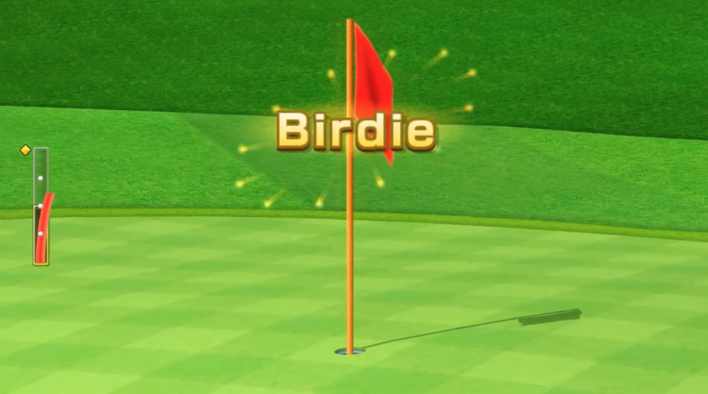

For a few moments in time, something so perfect comes around for the public to see. It's so wonderful, it can't be put into words. The best way to describe it is just to see it with your own eyes and thank God that it's happening!
① It starts always with Dr. Nicole who not only is very smart and successful, but she is very athletic as well. She is known in the circuit as Dr. Delight as she never disappoints her fanbase as she always wins out on the links. She has never been defeated and proudly holds the title of expert Wii Golfer as she will take on all challengers.
THE DEFINATION OF DELIGHT: Delight means a high level of great pleasure, joy, or satisfaction. It can also describe a person or thing that causes this strong feeling. DELIGHT AS A NOUN: Great Joy: A deep sense of happiness. A source of pleasure: A person, object, or event that makes you happy. DELIGHT AS A VERB: To please: To bring high satisfaction to someone else. To enjoy: To find deep happiness in an activity (often used "to delight in"). (FROM INTERNET)
② Her challenger is someone so cool he is known for.... well, I am not sure, but he is a nice guy and treats any wii golf course as his own backyard amusement park! His name is Birdy Billy and if his red hot putting doesn't do the trick, his hitting the ball straight down the fairway will always keep him in the game!
Wii Golf is a popular motion-controlled sports video game mode featured in Nintendo's Wii Sports. Players hold the Wii Remote like a real golf club and swing it naturally to hit a ball across a 9-hole course, aiming for the lowest score possible. (FROM INTERNET)
⛳️ This game could last all weekend and the only thing that matters is winning! Bragging rights have never been higher as the only thing important is being known as the Best Wii Golfer ever! ⛳️


COMING TO ESPN ON THANKSGIVING 2026: People Magazine said this could be the most televised event of the century! It's that good, it's actually perfect!